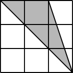

What is the product of all four digits of the year 2011?
0
0
$\frac{5075}{25}=$
203
203
Today, the difference between my parents' ages is 10 years. Four years ago, what was the difference between their ages?
10 years
10
ABCD is a square. BEC is an equilateral triangle. What is the perimeter of shape ABECD?
20 in.
20
What is $\frac{3}{5}$ of 10?
6
6
$7-6\frac{7}{8}=$
$\frac{1}{8}$
.125
Write $(8 \times 10,000) + (1 \times 1,000) + (7 \times 100) + (4 \times 1)$ in standard notation.
81,704
81704
$\frac{1}{2}\div\frac{2}{3}=$
$\frac{3}{4}$
.75
$12\frac{1}{2}$% of 80 =
10
10
There are 10 chickens and 10 cows. How many legs are there?
60
60
How many prime numbers are between 20 and 30?
2
2
Sue had an average of exactly 84 after 2 tests. She scored 96 on the 3rd test. What is her average for all 3 tests?
88
88
Write the reduced fraction for 45%
$\frac{9}{20}$
.45
Find the area.
16 square cm
16
$3+3\div3+3\times3=$
13
13
$\frac{2}{3}+\frac{1}{6}=$
$\frac{5}{6}$
5/6
What percent of 30 is 6?
20%
20
A man spent $\frac{2}{3}$ of his money and then lost $\frac{2}{3}$ of his remaining money, leaving him with $18. With how much money did he start?
$162
162
List the single digit whole numbers that are factors of 36,270.
1, 2, 3, 5, 6, 9
1, 2, 3, 5, 6, 9
What is the largest prime number that is a factor of 364.
13
13
Round $283.\overline{56}$ to the nearest hundredth.
283.57
283.57
$\frac{8^2}{2^3}=$
8
8
Find the perimeter.
86 units
86
5 ft 7 in. $-$ 3 ft 10 in.
1 ft 9 in.
1 ft 9 in.
1.23 + 0.046 =
1.276
1.276
What is the area of the shaded portion of this grid.

3 square units
3
What is 80% of 21?
16.8
16.8
$(-3)-(-1)-(-8)-(2)=$
4
4
Change $6\frac{2}{3}$% to a reduced fraction.
$\frac{1}{15}$
1/15
Solve for $x$.
$-3x+5=7x-11-2x$
2
2
What percent of 44 is 55?
5%
125
Evaluate for $m=3$ and $n=-2$.
$m^2+4mn+n^2$
-19
-19
How many prime numbers are between 1 and 40?
12
12
The average of four numbers is 10. Three of the four numbers are 2, 14, and 7. What is the fourth number?
17
17
$\frac{9}{25}\div\frac{27}{15}=$
$\frac{1}{5}$
.2
Find the area.
40 square units
40
$41-3\cdot 5+4\cdot 6=$
50
50
$7\frac{1}{5}-6\frac{2}{3}=$
$\frac{8}{15}$
8/15
XLIV =
44
44
$2^2-2^3[2^2(3-2^2)+2^2(3-1)]=$
-28
-28
Evaluate for $m=-3$ and $n=2$.
$3^2mn^5mn^{-2}m^{-2}(-1)^5$
-72
-72
Find m.
3 units
3
Solve for $x$.
$2x-4+3x=x+24$
7
7
If $5x-2=5$, what is the value of $10x-3$?
11
11
Factor completely:
$2ax^2-20ax+42a$
$2a(x-7)(x-3)$
2a(x-7)(x-3)
Find 3 consecutive even integers such that 4 times the sum of the first and third is 16 greater than 7 times the second.
14, 16, 18
14, 16, 18
Solve for $x$.
$\frac{2x}{7}-\frac{3x}{2}=\frac{1}{3}$
$-\frac{14}{51}$
-14/51
Solve for $p$.
$4p+3a-5=6a+p$
$p=a+\frac{5}{3}$
a+5/3
Find the area.
92 square units
92
Solve the following system of equations:
$x-9y=17$
$-4x+7y=19$
$x = -10$ and $y = -3$, or $(-10, -3)$
-10, -3